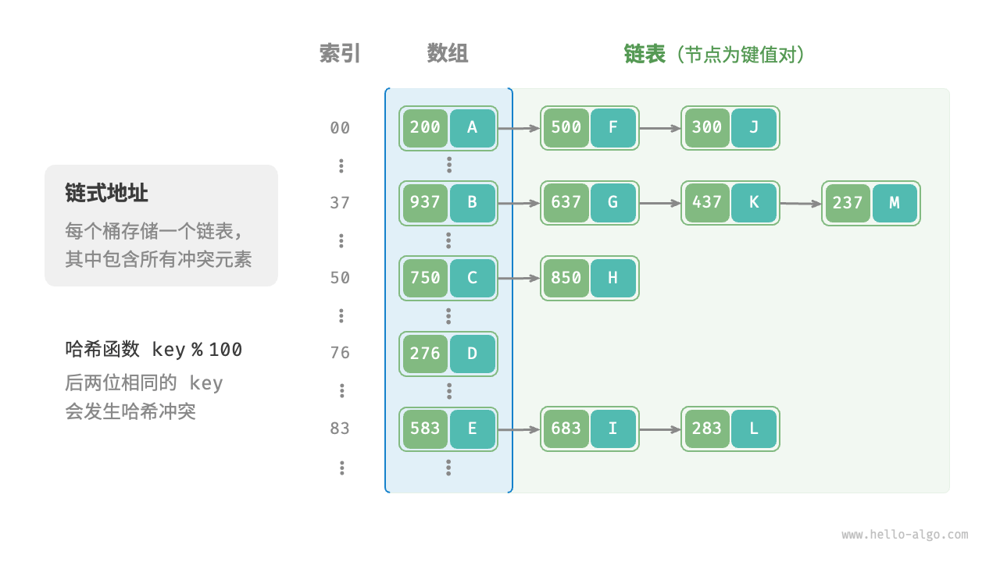

哈希冲突
上一节提到，通常情况下哈希函数的输入空间远大于输出空间，因此理论上哈希冲突是不可避免的。比如，输入空间为全体整数，输出空间为数组容量大小，则必然有多个整数映射至同一桶索引。
哈希冲突会导致查询结果错误，严重影响哈希表的可用性。为了解决该问题，每当遇到哈希冲突时，我们就进行哈希表扩容，直至冲突消失为止。此方法简单粗暴且有效，但效率太低，因为哈希表扩容需要进行大量的数据搬运与哈希值计算。为了提升效率，我们可以采用以下策略。
- 改良哈希表数据结构，使得哈希表可以在出现哈希冲突时正常工作。
- 仅在必要时，即当哈希冲突比较严重时，才执行扩容操作。
哈希表的结构改良方法主要包括“链式地址”和“开放寻址”。
链式地址
在原始哈希表中，每个桶仅能存储一个键值对。「链式地址 separate chaining」将单个元素转换为链表，将键值对作为链表节点，将所有发生冲突的键值对都存储在同一链表中。下图展示了一个链式地址哈希表的例子。

基于链式地址实现的哈希表的操作方法发生了以下变化。
- 查询元素：输入
key，经过哈希函数得到桶索引，即可访问链表头节点，然后遍历链表并对比key以查找目标键值对。 - 添加元素：首先通过哈希函数访问链表头节点，然后将节点（键值对）添加到链表中。
- 删除元素：根据哈希函数的结果访问链表头部，接着遍历链表以查找目标节点并将其删除。
链式地址存在以下局限性。
- 占用空间增大：链表包含节点指针，它相比数组更加耗费内存空间。
- 查询效率降低：因为需要线性遍历链表来查找对应元素。
以下代码给出了链式地址哈希表的简单实现，需要注意两点。
- 使用列表（动态数组）代替链表，从而简化代码。在这种设定下，哈希表（数组）包含多个桶，每个桶都是一个列表。
以下实现包含哈希表扩容方法。当负载因子超过 $\frac{2}{3}$ 时，我们将哈希表扩容至原先的 $2$ 倍。
"Python"
class HashMapChaining: """链式地址哈希表""" def __init__(self): """构造方法""" self.size = 0 // 键值对数量 self.capacity = 4 // 哈希表容量 self.load_thres = 2.0 / 3.0 // 触发扩容的负载因子阈值 self.extend_ratio = 2 // 扩容倍数 self.buckets = [[] for _ in range(self.capacity)] // 桶数组 def hash_func(self, key: int) -> int: """哈希函数""" return key % self.capacity def load_factor(self) -> float: """负载因子""" return self.size / self.capacity def get(self, key: int) -> str | None: """查询操作""" index = self.hash_func(key) bucket = self.buckets[index] // 遍历桶，若找到 key ，则返回对应 val for pair in bucket: if pair.key == key: return pair.val // 若未找到 key ，则返回 None return None def put(self, key: int, val: str): """添加操作""" // 当负载因子超过阈值时，执行扩容 if self.load_factor() > self.load_thres: self.extend() index = self.hash_func(key) bucket = self.buckets[index] // 遍历桶，若遇到指定 key ，则更新对应 val 并返回 for pair in bucket: if pair.key == key: pair.val = val return // 若无该 key ，则将键值对添加至尾部 pair = Pair(key, val) bucket.append(pair) self.size += 1 def remove(self, key: int): """删除操作""" index = self.hash_func(key) bucket = self.buckets[index] // 遍历桶，从中删除键值对 for pair in bucket: if pair.key == key: bucket.remove(pair) self.size -= 1 break def extend(self): """扩容哈希表""" // 暂存原哈希表 buckets = self.buckets // 初始化扩容后的新哈希表 self.capacity *= self.extend_ratio self.buckets = [[] for _ in range(self.capacity)] self.size = 0 // 将键值对从原哈希表搬运至新哈希表 for bucket in buckets: for pair in bucket: self.put(pair.key, pair.val) def print(self): """打印哈希表""" for bucket in self.buckets: res = [] for pair in bucket: res.append(str(pair.key) + " -> " + pair.val) print(res)"C++"
/* 链式地址哈希表 */ class HashMapChaining { private: int size; // 键值对数量 int capacity; // 哈希表容量 double loadThres; // 触发扩容的负载因子阈值 int extendRatio; // 扩容倍数 vector<vector<Pair *>> buckets; // 桶数组 public: /* 构造方法 */ HashMapChaining() : size(0), capacity(4), loadThres(2.0 / 3.0), extendRatio(2) { buckets.resize(capacity); } /* 析构方法 */ ~HashMapChaining() { for (auto &bucket : buckets) { for (Pair *pair : bucket) { // 释放内存 delete pair; } } } /* 哈希函数 */ int hashFunc(int key) { return key % capacity; } /* 负载因子 */ double loadFactor() { return (double)size / (double)capacity; } /* 查询操作 */ string get(int key) { int index = hashFunc(key); // 遍历桶，若找到 key ，则返回对应 val for (Pair *pair : buckets[index]) { if (pair->key == key) { return pair->val; } } // 若未找到 key ，则返回空字符串 return ""; } /* 添加操作 */ void put(int key, string val) { // 当负载因子超过阈值时，执行扩容 if (loadFactor() > loadThres) { extend(); } int index = hashFunc(key); // 遍历桶，若遇到指定 key ，则更新对应 val 并返回 for (Pair *pair : buckets[index]) { if (pair->key == key) { pair->val = val; return; } } // 若无该 key ，则将键值对添加至尾部 buckets[index].push_back(new Pair(key, val)); size++; } /* 删除操作 */ void remove(int key) { int index = hashFunc(key); auto &bucket = buckets[index]; // 遍历桶，从中删除键值对 for (int i = 0; i < bucket.size(); i++) { if (bucket[i]->key == key) { Pair *tmp = bucket[i]; bucket.erase(bucket.begin() + i); // 从中删除键值对 delete tmp; // 释放内存 size--; return; } } } /* 扩容哈希表 */ void extend() { // 暂存原哈希表 vector<vector<Pair *>> bucketsTmp = buckets; // 初始化扩容后的新哈希表 capacity *= extendRatio; buckets.clear(); buckets.resize(capacity); size = 0; // 将键值对从原哈希表搬运至新哈希表 for (auto &bucket : bucketsTmp) { for (Pair *pair : bucket) { put(pair->key, pair->val); // 释放内存 delete pair; } } } /* 打印哈希表 */ void print() { for (auto &bucket : buckets) { cout << "["; for (Pair *pair : bucket) { cout << pair->key << " -> " << pair->val << ", "; } cout << "]\n"; } } };"Java"
/* 链式地址哈希表 */ class HashMapChaining { int size; // 键值对数量 int capacity; // 哈希表容量 double loadThres; // 触发扩容的负载因子阈值 int extendRatio; // 扩容倍数 List<List<Pair>> buckets; // 桶数组 /* 构造方法 */ public HashMapChaining() { size = 0; capacity = 4; loadThres = 2.0 / 3.0; extendRatio = 2; buckets = new ArrayList<>(capacity); for (int i = 0; i < capacity; i++) { buckets.add(new ArrayList<>()); } } /* 哈希函数 */ int hashFunc(int key) { return key % capacity; } /* 负载因子 */ double loadFactor() { return (double) size / capacity; } /* 查询操作 */ String get(int key) { int index = hashFunc(key); List<Pair> bucket = buckets.get(index); // 遍历桶，若找到 key ，则返回对应 val for (Pair pair : bucket) { if (pair.key == key) { return pair.val; } } // 若未找到 key ，则返回 null return null; } /* 添加操作 */ void put(int key, String val) { // 当负载因子超过阈值时，执行扩容 if (loadFactor() > loadThres) { extend(); } int index = hashFunc(key); List<Pair> bucket = buckets.get(index); // 遍历桶，若遇到指定 key ，则更新对应 val 并返回 for (Pair pair : bucket) { if (pair.key == key) { pair.val = val; return; } } // 若无该 key ，则将键值对添加至尾部 Pair pair = new Pair(key, val); bucket.add(pair); size++; } /* 删除操作 */ void remove(int key) { int index = hashFunc(key); List<Pair> bucket = buckets.get(index); // 遍历桶，从中删除键值对 for (Pair pair : bucket) { if (pair.key == key) { bucket.remove(pair); size--; break; } } } /* 扩容哈希表 */ void extend() { // 暂存原哈希表 List<List<Pair>> bucketsTmp = buckets; // 初始化扩容后的新哈希表 capacity *= extendRatio; buckets = new ArrayList<>(capacity); for (int i = 0; i < capacity; i++) { buckets.add(new ArrayList<>()); } size = 0; // 将键值对从原哈希表搬运至新哈希表 for (List<Pair> bucket : bucketsTmp) { for (Pair pair : bucket) { put(pair.key, pair.val); } } } /* 打印哈希表 */ void print() { for (List<Pair> bucket : buckets) { List<String> res = new ArrayList<>(); for (Pair pair : bucket) { res.add(pair.key + " -> " + pair.val); } System.out.println(res); } } }
值得注意的是，当链表很长时，查询效率 $O(n)$ 很差。此时可以将链表转换为“AVL 树”或“红黑树”，从而将查询操作的时间复杂度优化至 $O(\log n)$ 。
开放寻址
「开放寻址 open addressing」不引入额外的数据结构，而是通过“多次探测”来处理哈希冲突，探测方式主要包括线性探测、平方探测和多次哈希等。
下面以线性探测为例，介绍开放寻址哈希表的工作机制。
线性探测
线性探测采用固定步长的线性搜索来进行探测，其操作方法与普通哈希表有所不同。
- 插入元素：通过哈希函数计算桶索引，若发现桶内已有元素，则从冲突位置向后线性遍历（步长通常为 $1$ ），直至找到空桶，将元素插入其中。
- 查找元素：若发现哈希冲突，则使用相同步长向后进行线性遍历，直到找到对应元素，返回
value即可；如果遇到空桶，说明目标元素不在哈希表中，返回None。
下图展示了开放寻址（线性探测）哈希表的键值对分布。根据此哈希函数，最后两位相同的 key 都会被映射到相同的桶。而通过线性探测，它们被依次存储在该桶以及之下的桶中。

然而，线性探测容易产生“聚集现象”。具体来说，数组中连续被占用的位置越长，这些连续位置发生哈希冲突的可能性越大，从而进一步促使该位置的聚堆生长，形成恶性循环，最终导致增删查改操作效率劣化。
值得注意的是，我们不能在开放寻址哈希表中直接删除元素。这是因为删除元素会在数组内产生一个空桶 None ，而当查询元素时，线性探测到该空桶就会返回，因此在该空桶之下的元素都无法再被访问到，程序可能误判这些元素不存在。

为了解决该问题，我们可以采用「懒删除 lazy deletion」机制：它不直接从哈希表中移除元素，而是利用一个常量 TOMBSTONE 来标记这个桶。在该机制下，None 和 TOMBSTONE 都代表空桶，都可以放置键值对。但不同的是，线性探测到 TOMBSTONE 时应该继续遍历，因为其之下可能还存在键值对。
然而，懒删除可能会加速哈希表的性能退化。这是因为每次删除操作都会产生一个删除标记，随着 TOMBSTONE 的增加，搜索时间也会增加，因为线性探测可能需要跳过多个 TOMBSTONE 才能找到目标元素。
为此，考虑在线性探测中记录遇到的首个 TOMBSTONE 的索引，并将搜索到的目标元素与该 TOMBSTONE 交换位置。这样做的好处是当每次查询或添加元素时，元素会被移动至距离理想位置（探测起始点）更近的桶，从而优化查询效率。
以下代码实现了一个包含懒删除的开放寻址（线性探测）哈希表。为了更加充分地使用哈希表的空间，我们将哈希表看作一个“环形数组”，当越过数组尾部时，回到头部继续遍历。
"Python"
class HashMapOpenAddressing: """开放寻址哈希表""" def __init__(self): """构造方法""" self.size = 0 // 键值对数量 self.capacity = 4 // 哈希表容量 self.load_thres = 2.0 / 3.0 // 触发扩容的负载因子阈值 self.extend_ratio = 2 // 扩容倍数 self.buckets: list[Pair | None] = [None] * self.capacity // 桶数组 self.TOMBSTONE = Pair(-1, "-1") // 删除标记 def hash_func(self, key: int) -> int: """哈希函数""" return key % self.capacity def load_factor(self) -> float: """负载因子""" return self.size / self.capacity def find_bucket(self, key: int) -> int: """搜索 key 对应的桶索引""" index = self.hash_func(key) first_tombstone = -1 // 线性探测，当遇到空桶时跳出 while self.buckets[index] is not None: // 若遇到 key ，返回对应的桶索引 if self.buckets[index].key == key: // 若之前遇到了删除标记，则将键值对移动至该索引处 if first_tombstone != -1: self.buckets[first_tombstone] = self.buckets[index] self.buckets[index] = self.TOMBSTONE return first_tombstone // 返回移动后的桶索引 return index // 返回桶索引 // 记录遇到的首个删除标记 if first_tombstone == -1 and self.buckets[index] is self.TOMBSTONE: first_tombstone = index // 计算桶索引，越过尾部则返回头部 index = (index + 1) % self.capacity // 若 key 不存在，则返回添加点的索引 return index if first_tombstone == -1 else first_tombstone def get(self, key: int) -> str: """查询操作""" // 搜索 key 对应的桶索引 index = self.find_bucket(key) // 若找到键值对，则返回对应 val if self.buckets[index] not in [None, self.TOMBSTONE]: return self.buckets[index].val // 若键值对不存在，则返回 None return None def put(self, key: int, val: str): """添加操作""" // 当负载因子超过阈值时，执行扩容 if self.load_factor() > self.load_thres: self.extend() // 搜索 key 对应的桶索引 index = self.find_bucket(key) // 若找到键值对，则覆盖 val 并返回 if self.buckets[index] not in [None, self.TOMBSTONE]: self.buckets[index].val = val return // 若键值对不存在，则添加该键值对 self.buckets[index] = Pair(key, val) self.size += 1 def remove(self, key: int): """删除操作""" // 搜索 key 对应的桶索引 index = self.find_bucket(key) // 若找到键值对，则用删除标记覆盖它 if self.buckets[index] not in [None, self.TOMBSTONE]: self.buckets[index] = self.TOMBSTONE self.size -= 1 def extend(self): """扩容哈希表""" // 暂存原哈希表 buckets_tmp = self.buckets // 初始化扩容后的新哈希表 self.capacity *= self.extend_ratio self.buckets = [None] * self.capacity self.size = 0 // 将键值对从原哈希表搬运至新哈希表 for pair in buckets_tmp: if pair not in [None, self.TOMBSTONE]: self.put(pair.key, pair.val) def print(self): """打印哈希表""" for pair in self.buckets: if pair is None: print("None") elif pair is self.TOMBSTONE: print("TOMBSTONE") else: print(pair.key, "->", pair.val)"C++"
/* 开放寻址哈希表 */ class HashMapOpenAddressing { private: int size; // 键值对数量 int capacity = 4; // 哈希表容量 const double loadThres = 2.0 / 3.0; // 触发扩容的负载因子阈值 const int extendRatio = 2; // 扩容倍数 vector<Pair *> buckets; // 桶数组 Pair *TOMBSTONE = new Pair(-1, "-1"); // 删除标记 public: /* 构造方法 */ HashMapOpenAddressing() : size(0), buckets(capacity, nullptr) { } /* 析构方法 */ ~HashMapOpenAddressing() { for (Pair *pair : buckets) { if (pair != nullptr && pair != TOMBSTONE) { delete pair; } } delete TOMBSTONE; } /* 哈希函数 */ int hashFunc(int key) { return key % capacity; } /* 负载因子 */ double loadFactor() { return (double)size / capacity; } /* 搜索 key 对应的桶索引 */ int findBucket(int key) { int index = hashFunc(key); int firstTombstone = -1; // 线性探测，当遇到空桶时跳出 while (buckets[index] != nullptr) { // 若遇到 key ，返回对应的桶索引 if (buckets[index]->key == key) { // 若之前遇到了删除标记，则将键值对移动至该索引处 if (firstTombstone != -1) { buckets[firstTombstone] = buckets[index]; buckets[index] = TOMBSTONE; return firstTombstone; // 返回移动后的桶索引 } return index; // 返回桶索引 } // 记录遇到的首个删除标记 if (firstTombstone == -1 && buckets[index] == TOMBSTONE) { firstTombstone = index; } // 计算桶索引，越过尾部则返回头部 index = (index + 1) % capacity; } // 若 key 不存在，则返回添加点的索引 return firstTombstone == -1 ? index : firstTombstone; } /* 查询操作 */ string get(int key) { // 搜索 key 对应的桶索引 int index = findBucket(key); // 若找到键值对，则返回对应 val if (buckets[index] != nullptr && buckets[index] != TOMBSTONE) { return buckets[index]->val; } // 若键值对不存在，则返回空字符串 return ""; } /* 添加操作 */ void put(int key, string val) { // 当负载因子超过阈值时，执行扩容 if (loadFactor() > loadThres) { extend(); } // 搜索 key 对应的桶索引 int index = findBucket(key); // 若找到键值对，则覆盖 val 并返回 if (buckets[index] != nullptr && buckets[index] != TOMBSTONE) { buckets[index]->val = val; return; } // 若键值对不存在，则添加该键值对 buckets[index] = new Pair(key, val); size++; } /* 删除操作 */ void remove(int key) { // 搜索 key 对应的桶索引 int index = findBucket(key); // 若找到键值对，则用删除标记覆盖它 if (buckets[index] != nullptr && buckets[index] != TOMBSTONE) { delete buckets[index]; buckets[index] = TOMBSTONE; size--; } } /* 扩容哈希表 */ void extend() { // 暂存原哈希表 vector<Pair *> bucketsTmp = buckets; // 初始化扩容后的新哈希表 capacity *= extendRatio; buckets = vector<Pair *>(capacity, nullptr); size = 0; // 将键值对从原哈希表搬运至新哈希表 for (Pair *pair : bucketsTmp) { if (pair != nullptr && pair != TOMBSTONE) { put(pair->key, pair->val); delete pair; } } } /* 打印哈希表 */ void print() { for (Pair *pair : buckets) { if (pair == nullptr) { cout << "nullptr" << endl; } else if (pair == TOMBSTONE) { cout << "TOMBSTONE" << endl; } else { cout << pair->key << " -> " << pair->val << endl; } } } };"Java"
/* 开放寻址哈希表 */ class HashMapOpenAddressing { private int size; // 键值对数量 private int capacity = 4; // 哈希表容量 private final double loadThres = 2.0 / 3.0; // 触发扩容的负载因子阈值 private final int extendRatio = 2; // 扩容倍数 private Pair[] buckets; // 桶数组 private final Pair TOMBSTONE = new Pair(-1, "-1"); // 删除标记 /* 构造方法 */ public HashMapOpenAddressing() { size = 0; buckets = new Pair[capacity]; } /* 哈希函数 */ private int hashFunc(int key) { return key % capacity; } /* 负载因子 */ private double loadFactor() { return (double) size / capacity; } /* 搜索 key 对应的桶索引 */ private int findBucket(int key) { int index = hashFunc(key); int firstTombstone = -1; // 线性探测，当遇到空桶时跳出 while (buckets[index] != null) { // 若遇到 key ，返回对应的桶索引 if (buckets[index].key == key) { // 若之前遇到了删除标记，则将键值对移动至该索引处 if (firstTombstone != -1) { buckets[firstTombstone] = buckets[index]; buckets[index] = TOMBSTONE; return firstTombstone; // 返回移动后的桶索引 } return index; // 返回桶索引 } // 记录遇到的首个删除标记 if (firstTombstone == -1 && buckets[index] == TOMBSTONE) { firstTombstone = index; } // 计算桶索引，越过尾部则返回头部 index = (index + 1) % capacity; } // 若 key 不存在，则返回添加点的索引 return firstTombstone == -1 ? index : firstTombstone; } /* 查询操作 */ public String get(int key) { // 搜索 key 对应的桶索引 int index = findBucket(key); // 若找到键值对，则返回对应 val if (buckets[index] != null && buckets[index] != TOMBSTONE) { return buckets[index].val; } // 若键值对不存在，则返回 null return null; } /* 添加操作 */ public void put(int key, String val) { // 当负载因子超过阈值时，执行扩容 if (loadFactor() > loadThres) { extend(); } // 搜索 key 对应的桶索引 int index = findBucket(key); // 若找到键值对，则覆盖 val 并返回 if (buckets[index] != null && buckets[index] != TOMBSTONE) { buckets[index].val = val; return; } // 若键值对不存在，则添加该键值对 buckets[index] = new Pair(key, val); size++; } /* 删除操作 */ public void remove(int key) { // 搜索 key 对应的桶索引 int index = findBucket(key); // 若找到键值对，则用删除标记覆盖它 if (buckets[index] != null && buckets[index] != TOMBSTONE) { buckets[index] = TOMBSTONE; size--; } } /* 扩容哈希表 */ private void extend() { // 暂存原哈希表 Pair[] bucketsTmp = buckets; // 初始化扩容后的新哈希表 capacity *= extendRatio; buckets = new Pair[capacity]; size = 0; // 将键值对从原哈希表搬运至新哈希表 for (Pair pair : bucketsTmp) { if (pair != null && pair != TOMBSTONE) { put(pair.key, pair.val); } } } /* 打印哈希表 */ public void print() { for (Pair pair : buckets) { if (pair == null) { System.out.println("null"); } else if (pair == TOMBSTONE) { System.out.println("TOMBSTONE"); } else { System.out.println(pair.key + " -> " + pair.val); } } } }
平方探测
平方探测与线性探测类似，都是开放寻址的常见策略之一。当发生冲突时，平方探测不是简单地跳过一个固定的步数，而是跳过“探测次数的平方”的步数，即 $1, 4, 9, \dots$ 步。
平方探测主要具有以下优势。
- 平方探测通过跳过探测次数平方的距离，试图缓解线性探测的聚集效应。
- 平方探测会跳过更大的距离来寻找空位置，有助于数据分布得更加均匀。
然而，平方探测并不是完美的。
- 仍然存在聚集现象，即某些位置比其他位置更容易被占用。
- 由于平方的增长，平方探测可能不会探测整个哈希表，这意味着即使哈希表中有空桶，平方探测也可能无法访问到它。
多次哈希
顾名思义，多次哈希方法使用多个哈希函数 $f_1(x)$、$f_2(x)$、$f_3(x)$、$\dots$ 进行探测。
- 插入元素：若哈希函数 $f_1(x)$ 出现冲突，则尝试 $f_2(x)$ ，以此类推，直到找到空位后插入元素。
- 查找元素：在相同的哈希函数顺序下进行查找，直到找到目标元素时返回；若遇到空位或已尝试所有哈希函数，说明哈希表中不存在该元素，则返回
None。
与线性探测相比，多次哈希方法不易产生聚集，但多个哈希函数会带来额外的计算量。
!!! tip
请注意，开放寻址（线性探测、平方探测和多次哈希）哈希表都存在“不能直接删除元素”的问题。
编程语言的选择
各种编程语言采取了不同的哈希表实现策略，下面举几个例子。
- Python 采用开放寻址。字典
dict使用伪随机数进行探测。 - Java 采用链式地址。自 JDK 1.8 以来，当
HashMap内数组长度达到 64 且链表长度达到 8 时，链表会转换为红黑树以提升查找性能。 - Go 采用链式地址。Go 规定每个桶最多存储 8 个键值对，超出容量则连接一个溢出桶；当溢出桶过多时，会执行一次特殊的等量扩容操作，以确保性能。